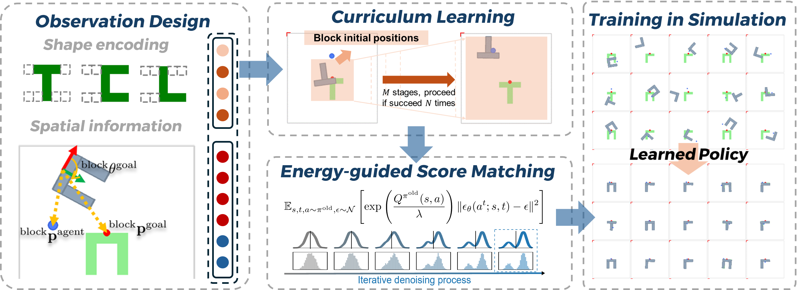
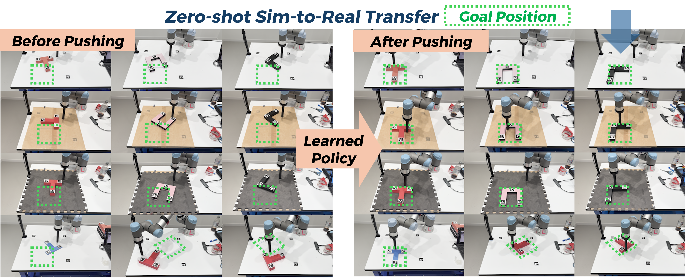

Diffusion policy has shown unprecedented performance in learning complex maneuvers for robots. However, most existing approaches rely on behavior cloning from expert trajectories, which limits their practicality due to the need for high-quality demonstrations.
In this paper, we introduce a reinforcement learning (RL) framework to train a single diffusion policy for multiple contact-rich block-pushing tasks, eliminating the reliance on expert data. We propose energy-guided score matching to implement policy mirror descent for diffusion policies, bypassing the collection of expert demonstrations in behavior cloning. By incorporating curriculum learning and crafting observation and action spaces, our approach successfully learns diverse and complex multi-task pushing behaviors from sparse rewards in simulation—where conventional RL with unimodal policies fails.
We further demonstrate that the trained diffusion policy transfers in zero-shot to real-world tasks with varying goal positions, block shapes, block weights, and surface frictions, highlighting its robustness, generality, and practical viability.

